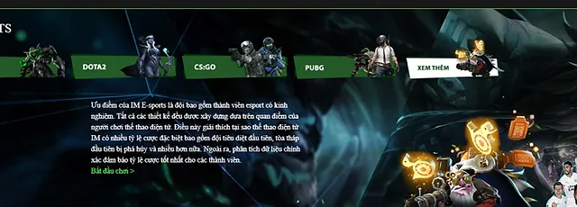
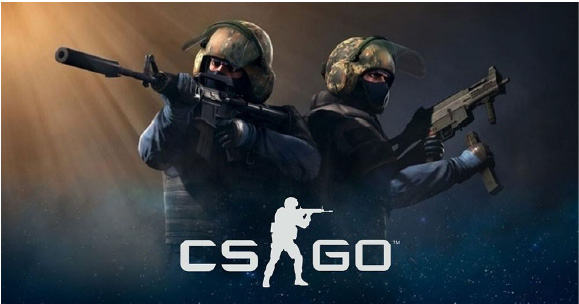

Cách cá cược CS GO JBOVN chi tiết cho người mới
Lần cập nhật cuối: 20 Tháng Hai, 2024
Cá cược CS GO chắc chắn sẽ là trải nghiệm mà cược thủ không thể bỏ lỡ khi đến với nhà cái JBOVN. Bởi tựa game cá cược này mang đến sự hấp dẫn, gay cấn nhất dành cho cược thủ. Trong bài viết sau đây hãy cùng chúng tôi đi tìm hiểu về cách cá cược CS GO tại JBOVN chi tiết nhất dành cho người chơi khi mới bắt đầu nhé!
Giới thiệu tổng quan về cá cược CS GO JBOVN
Đối với rất nhiều cược thủ có thể chưa biết đến CS GO là gì, cá cược CS GO ra sao. Đây thực chất là một trong những tựa game bắn súng đối kháng hay, hấp dẫn hàng đầu hiện nay, thu hút đông đảo anh em cược thủ tham gia.
Người chơi khi tham gia tựa game bắn súng này sẽ cần phải có chiến thuật, phối hợp tinh thần đồng đội ưng ý, sau đó có thể bắn hạ thành công các đối thủ trong đội đối phương. Chính vì vậy mang đến sự gay cấn, hồi hộp của tựa game này. Tựa game CS GO chính thức xuất hiện vào năm 2012, cho đến thời điểm hiện tại vẫn đang là tựa game chất lượng hàng đầu trong thể loại game bắn súng đối kháng. Mỗi ván đấu của CS GO đều khiến người chơi ấn tượng với chất lượng hình ảnh, âm thanh chân thực, sống động nhất. cược.Giới thiệu tổng quan về cá cược CS GO JBOVN
Luật chơi cá cược CS GO tại JBOVN
Luật chơi cá cược CS GO tại JBOVN như thế nào? Hiện nay luật chơi cá cược CS GO JBOVN được đánh giá tương đối đơn giản. Theo đó trong mỗi ván đấu sẽ bao gồm 2 đội chơi, mỗi lượt chơi, các đội cần phải thực hiện hoàn thành mục tiêu nhất định đã được đề ra hoặc phải tiêu diệt đội đối thủ thành công để giành chiến thắng.
Luật chơi cá cược CS GO tại JBOVN
Cược thủ khi tham gia cá cược tại CS GO JBOVN sẽ tiến hành đặt cược vào các cửa cược theo quy định hiện nay dựa trên việc phân tích, dự đoán kết quả cuối cùng của các trận đối đầu. Phía JBOVN sẽ cập nhật đầy đủ thông tin lịch thi đấu, kèo cược CS GO dành cho cược thủ.
Hiện nay những kèo cá cược CS GO mà cược thủ có thể tìm kiếm đặt cược tại JBOVN bao gồm:- Kèo cược chấp
- Kèo cược Tài – Xỉu
- Kèo cược đội vô địch
- Kèo cược số mạng hạ được
- Kèo cược tới điểm trước
- Kèo cược hiệp 16
Hướng dẫn cách chơi CS GO tại JBOVN
Để bắt đầu những ván cược CS GO tại JBOVN không hề phức tạp, khó khăn. Thay vào đó cược thủ chỉ cần nhanh chóng thực hiện các bước theo hướng dẫn sau đây của chúng tôi:

Hướng dẫn cách chơi CS GO tại JBOVN
- Bước 1: Đầu tiên cược thủ hãy thực hiện Đăng nhập vào tài khoản JBOVN của mình. Khi chưa có tài khoản, cược thủ cần thực hiện Đăng ký JBOVN trước tiên.
- Bước 2: Khi đã đăng nhập, hãy đảm bảo rằng trong tài khoản cá cược JBOVN của cược thủ đã có tiền. Nếu chưa có tiền cược, hãy thực hiện nạp tiền thông qua các phương thức nạp được JBOVN cung cấp.
- Bước 3: Tiếp theo cược thủ sẽ chọn mục “E-Sports” trên giao diện trang chủ, nhấn chọn sảnh cược và chọn cược CS:GO. Lúc này cược thủ có thể lựa chọn kèo cược, trận đấu và bắt đầu tham gia cá cược CS GO tại JBOVN.
Kinh nghiệm chơi CS GO tại JBOVN
Để có thể tham gia cá cược CSGO tại JBOVN hiệu quả, cược thủ chắc chắn không thể bỏ qua những kinh nghiệm chơi được chúng tôi chia sẻ chi tiết ngay sau đây:
Kinh nghiệm chơi CS GO tại JBOVN
Tìm hiểu thông tin về các đội đấu CS:GO
Hiện nay tại các trận cá cược CS GO sẽ quy tụ những đội tuyển CS GO khác nhau. Điều quan trọng đó chính là cược thủ nên nắm rõ thông tin về phong độ, thực lực của mỗi đội, khi đó sẽ giúp cược thủ có thể dự đoán, phân tích trận đối đầu sắp tới một cách chính xác, đưa ra quyết định đúng đắn cá cược hợp lý dành cho mình.
Nắm rõ quy tắc cá cược CS GO tại JBOVN
Nếu như cược thủ tham gia cá cược nhưng không nắm rõ quy tắc cá cược chắc chắn sẽ khiến cược thủ bối rối trong quá trình tham gia cá cược. Vì vậy hãy đảm bảo rằng cược thủ đã nắm rõ được quy tắc cá cược CS GO cơ bản tại JBOVN, khi đó cược thủ có thể tham gia chơi mà không bị mơ hồ, khó khăn.
Một số câu hỏi liên quan đến CS GO tại JBOVN
Liên quan đến cá cược CS GO tại JBOVN, cược thủ hiện nay vẫn còn rất nhiều câu hỏi, thắc mắc. Sau đây là giải đáp cho một số thắc mắc về cá cược CS GO từ JBOVN:
Có thể cập nhật lịch thi đấu tại CS GO JBOVN không?
Hiện nay cược thủ hoàn toàn có thể cập nhật lịch thi đấu CS GO tại nhà cái JBOVN. Thông tin lịch đấu sẽ được cập nhật đầy đủ, nhanh chóng nhất giúp cược thủ không bỏ lỡ các cơ hội tham gia cá cược tựa game bắn súng đối kháng hấp dẫn này tại JBOVN.
Tỷ lệ trả thưởng của cá cược CS GO JBOVN như thế nào?
Cá cược CS GO tại JBOVN được đánh giá là có tỷ lệ cá cược tương đối hấp dẫn. Tùy thuộc vào mỗi kèo cược khác nhau mà có quy định về tỷ lệ trả thưởng khác nhau, tuy nhiên đều đảm bảo rằng tiền thưởng khi thắng cược của cược thủ đều cao và hấp dẫn nhất.
Lời kết
Trên đây là tổng hợp những thông tin chi tiết liên quan đến cá cược CS GO JBOVN, tựa game cá cược Esports được đặc biệt quan tâm hiện nay. Với bài viết này đã giúp cược thủ có thể nắm rõ cách chơi cá cược, kinh nghiệm chơi cá cược CSGO hiệu quả, thắng lớn. Mong rằng bài viết này đã hữu ích với cược thủ và cược thủ hãy nhanh chóng bắt đầu tham gia cá cược CS Go tại JBOVN để nhận thắng lớn nhé!
BÀI VIẾT MỚI NHẤT
Siêu Sao Bắn Cá JBOVN Hấp Dẫn Như Thế Nào?
Cách Chơi Bài Tấn & Thủ Thuật Chơi Cực Hay Ít Người Biết
Cách Chơi Bài Tam Cúc: Hướng Dẫn Từ A Đến Z Cho Người Mới
Thể thao điện tử – Sảnh cược đổi thưởng hấp dẫn tại nhà cái JBOVN
Hướng dẫn cách chơi Dice JBOVN dành cho tân thủ
Kèo rung – Tổng hợp thông tin từ A đến Z